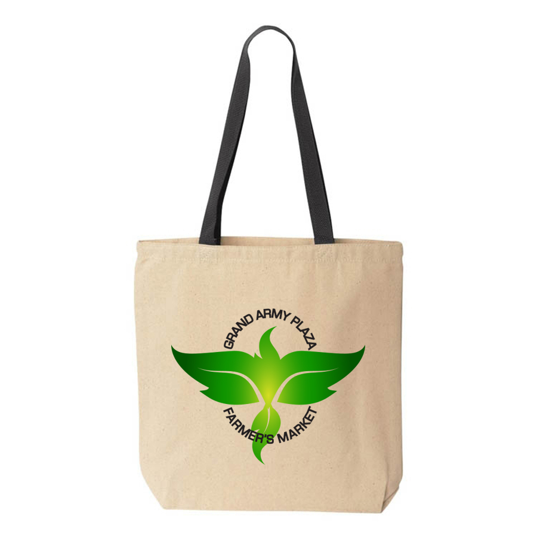
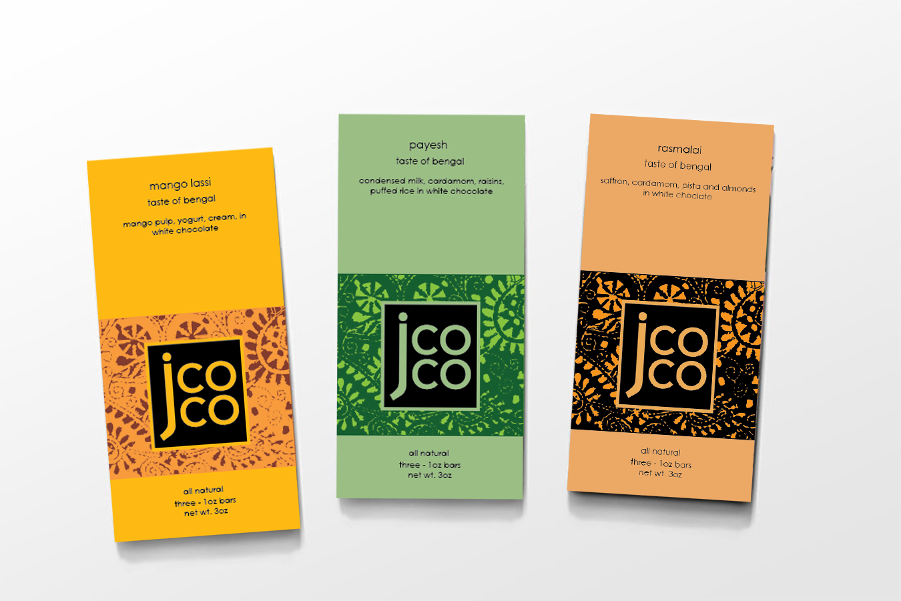

The Design Process
I designed this logo to represent the farmer's market of Brooklyn's very own Grand Army Plaza. I reimagined the identity of the market through an on-the-field visual research of the area for inspiration. I observed the many monuments that stand tall, from the Arc, to the Brooklyn Public Library. It caught my attention that there are 5 tower like structures where an eagle sits at its peak. With this in mind, I designed the logo by creating shapes of green leaves that combine to form the silouhette of an eagle.
The Logo Applied
JCoCo Chocolate Series - "Taste of Bengal"
The Design Process
Taste of Bengal is my conceptualized design of a brand new series of flavors for the JCoCo Chocolate company. JCoCO is known for originating their unique culinary influenced series' of flavors, so this concept fit right in their alley. Inspired by the ingredients from Bangladesh's most famous desserts, the flavors are rasmalai, mango lassi and payesh. The design for the package features the pattern of kantha embroidery, a form of textile art that Bangladesh is most famous for.